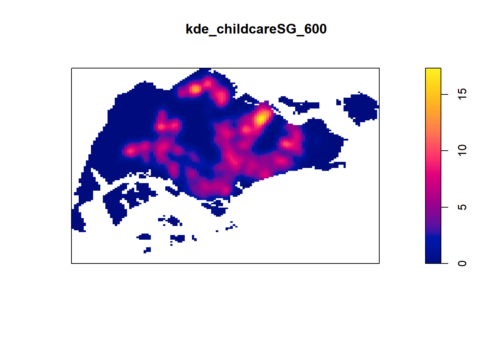
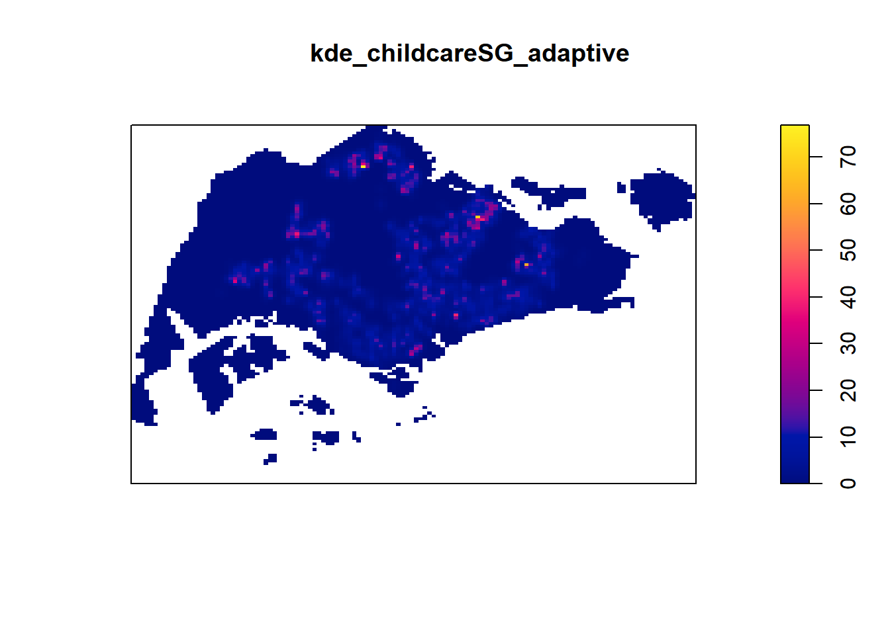
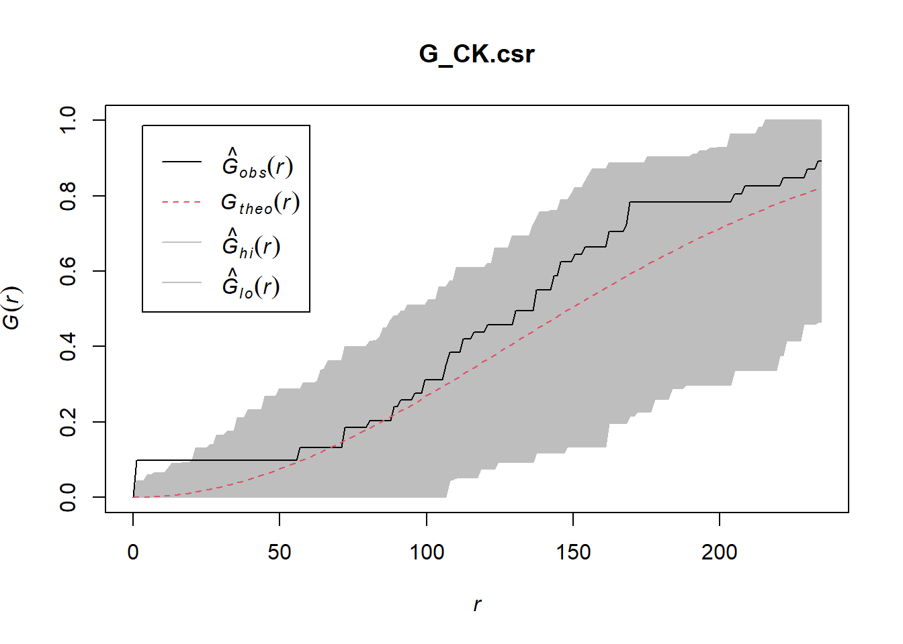
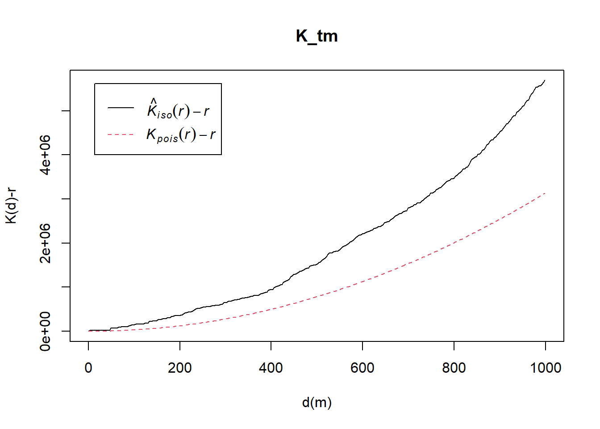
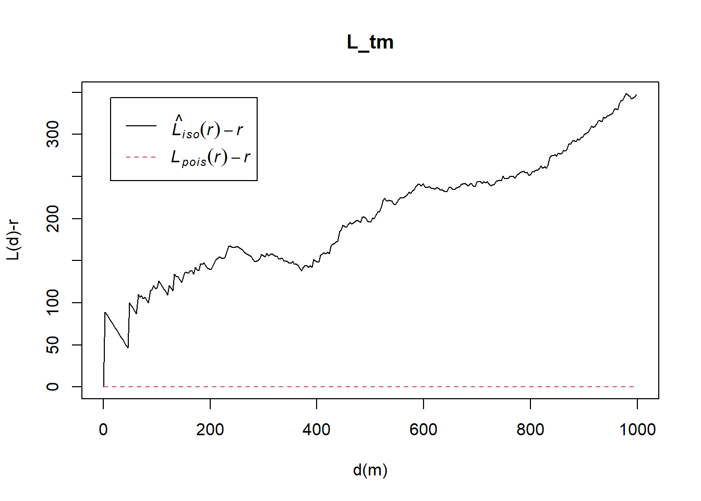

pacman::p_load(sf, raster, spatstat, tmap, tidyverse, rvest, geojsonsf)Spatial Point Patterns Analysis
1.0 Context:
Spatial Point Pattern Analysis involves evaluating the pattern or distribution of a set of points on a surface. These points can represent the locations of:
Events, such as crimes, traffic accidents, or disease outbreaks, or
Business services, like coffee shops and fast food outlets, or facilities such as childcare and eldercare centers.
The specific questions we would like to answer are as follows:
are the childcare centres in Singapore randomly distributed throughout the country?
if the answer is not, then the next logical question is where are the locations with higher concentration of childcare centres?
2.0 Downloading the Data sets
To provide answers to the questions above, three data sets will be used. They are:
CHILDCARE, a point feature data providing both location and attribute information of childcare centres. It was downloaded from Data.gov.sg and is in geojson format. Link hereMP14_SUBZONE_WEB_PL, a polygon feature data providing information of URA 2014 Master Plan Planning Subzone boundary data. It is in ESRI shapefile format. This data set was also downloaded from Data.gov.sg. Link hereCostalOutline, a polygon feature data showing the national boundary of Singapore. It is provided by SLA and is in ESRI shapefile format. Link here
3.0 Installing and loading R packages
In this hands-on exercise, five R packages will be used, they are:
sf, a relatively new R package specially designed to import, manage and process vector-based geospatial data in R.
spatstat, which has a wide range of useful functions for point pattern analysis. In this hands-on exercise, it will be used to perform 1st- and 2nd-order spatial point patterns analysis and derive kernel density estimation (KDE) layer.
raster which reads, writes, manipulates, analyses and model of gridded spatial data (i.e. raster). In this hands-on exercise, it will be used to convert image output generate by spatstat into raster format.
maptools which provides a set of tools for manipulating geographic data. In this hands-on exercise, we mainly use it to convert Spatial objects into ppp format of spatstat.
tmap which provides functions for plotting cartographic quality static point patterns maps or interactive maps by using leaflet API.
Use the code chunk below to install and launch the five R packages.
4.0 Spatial Data Wrangling
4.1 Importing Spatial Data
4.1.1 DIY:Use the appropriate SF function to retrieve the referencing system information of these geospatial data.
Simple, use the st_crs function from SF to check and print the crs information
# Retrieve CRS information
childcare_crs <- st_crs(childcare_sf)
sg_crs <- st_crs(sg_sf)
mpsz_crs <- st_crs(mpsz_sf)
# Print CRS information
print(childcare_crs)Coordinate Reference System:
User input: EPSG:3414
wkt:
PROJCRS["SVY21 / Singapore TM",
BASEGEOGCRS["SVY21",
DATUM["SVY21",
ELLIPSOID["WGS 84",6378137,298.257223563,
LENGTHUNIT["metre",1]]],
PRIMEM["Greenwich",0,
ANGLEUNIT["degree",0.0174532925199433]],
ID["EPSG",4757]],
CONVERSION["Singapore Transverse Mercator",
METHOD["Transverse Mercator",
ID["EPSG",9807]],
PARAMETER["Latitude of natural origin",1.36666666666667,
ANGLEUNIT["degree",0.0174532925199433],
ID["EPSG",8801]],
PARAMETER["Longitude of natural origin",103.833333333333,
ANGLEUNIT["degree",0.0174532925199433],
ID["EPSG",8802]],
PARAMETER["Scale factor at natural origin",1,
SCALEUNIT["unity",1],
ID["EPSG",8805]],
PARAMETER["False easting",28001.642,
LENGTHUNIT["metre",1],
ID["EPSG",8806]],
PARAMETER["False northing",38744.572,
LENGTHUNIT["metre",1],
ID["EPSG",8807]]],
CS[Cartesian,2],
AXIS["northing (N)",north,
ORDER[1],
LENGTHUNIT["metre",1]],
AXIS["easting (E)",east,
ORDER[2],
LENGTHUNIT["metre",1]],
USAGE[
SCOPE["Cadastre, engineering survey, topographic mapping."],
AREA["Singapore - onshore and offshore."],
BBOX[1.13,103.59,1.47,104.07]],
ID["EPSG",3414]]print(sg_crs)Coordinate Reference System:
User input: SVY21
wkt:
PROJCRS["SVY21",
BASEGEOGCRS["SVY21[WGS84]",
DATUM["World Geodetic System 1984",
ELLIPSOID["WGS 84",6378137,298.257223563,
LENGTHUNIT["metre",1]],
ID["EPSG",6326]],
PRIMEM["Greenwich",0,
ANGLEUNIT["Degree",0.0174532925199433]]],
CONVERSION["unnamed",
METHOD["Transverse Mercator",
ID["EPSG",9807]],
PARAMETER["Latitude of natural origin",1.36666666666667,
ANGLEUNIT["Degree",0.0174532925199433],
ID["EPSG",8801]],
PARAMETER["Longitude of natural origin",103.833333333333,
ANGLEUNIT["Degree",0.0174532925199433],
ID["EPSG",8802]],
PARAMETER["Scale factor at natural origin",1,
SCALEUNIT["unity",1],
ID["EPSG",8805]],
PARAMETER["False easting",28001.642,
LENGTHUNIT["metre",1],
ID["EPSG",8806]],
PARAMETER["False northing",38744.572,
LENGTHUNIT["metre",1],
ID["EPSG",8807]]],
CS[Cartesian,2],
AXIS["(E)",east,
ORDER[1],
LENGTHUNIT["metre",1,
ID["EPSG",9001]]],
AXIS["(N)",north,
ORDER[2],
LENGTHUNIT["metre",1,
ID["EPSG",9001]]]]print(mpsz_crs)Coordinate Reference System:
User input: SVY21
wkt:
PROJCRS["SVY21",
BASEGEOGCRS["SVY21[WGS84]",
DATUM["World Geodetic System 1984",
ELLIPSOID["WGS 84",6378137,298.257223563,
LENGTHUNIT["metre",1]],
ID["EPSG",6326]],
PRIMEM["Greenwich",0,
ANGLEUNIT["Degree",0.0174532925199433]]],
CONVERSION["unnamed",
METHOD["Transverse Mercator",
ID["EPSG",9807]],
PARAMETER["Latitude of natural origin",1.36666666666667,
ANGLEUNIT["Degree",0.0174532925199433],
ID["EPSG",8801]],
PARAMETER["Longitude of natural origin",103.833333333333,
ANGLEUNIT["Degree",0.0174532925199433],
ID["EPSG",8802]],
PARAMETER["Scale factor at natural origin",1,
SCALEUNIT["unity",1],
ID["EPSG",8805]],
PARAMETER["False easting",28001.642,
LENGTHUNIT["metre",1],
ID["EPSG",8806]],
PARAMETER["False northing",38744.572,
LENGTHUNIT["metre",1],
ID["EPSG",8807]]],
CS[Cartesian,2],
AXIS["(E)",east,
ORDER[1],
LENGTHUNIT["metre",1,
ID["EPSG",9001]]],
AXIS["(N)",north,
ORDER[2],
LENGTHUNIT["metre",1,
ID["EPSG",9001]]]]4.1.2 DIY: Assign the correct CRS to MPSZ_SF and SG_SF Simple Feature Data frames.
notice that the MPSZ_SF and SG_SF is in World Geodetic System 1984 format, we need set the correct crs to these data and we can do so using the st transform. We can do so using the transform method
4.1.3 Change the referencing System to Singapore National Projected Coordinate System
Note
Understanding the CRS in Our Data:
MPZ and Coastal Data:
CRS:
SVY21, which is the Singapore National Projected Coordinate System based on WGS84.Description: This is a common projected coordinate system used in Singapore for accurate mapping.
Childcare Data:
CRS:
SVY21 / Singapore TM(Transverse Mercator projection).Description: This is also a projection based on SVY21, specifically using the Transverse Mercator projection. It is very close to the SVY21 system, with minor differences in how the projection is handled.
Given that the map file serves as the base, we want all spatial data to overlay correctly, we should:
Transform the GeoJSON Data to Match the Map File’s CRS:
- Since our MPZ and Coastal data are already in
SVY21(EPSG:3414), transform the GeoJSON data toEPSG:3414as well.
- Since our MPZ and Coastal data are already in
Rationale:
This approach ensures that the childcare locations from the GeoJSON data will be accurately plotted within the boundaries and context provided by the map file (MPZ and Coastal data).
It avoids potential issues with misalignment, especially since oour base map data is already set up in a local projection suitable for Singapore.
# Transform Childcare data to match the base map's CRS (EPSG:3414)
childcare_sf <- st_read("data/child-care-services-geojson.geojson") %>%
st_transform(crs = 3414)Reading layer `child-care-services-geojson' from data source
`C:\Users\jiale\Desktop\IS415\IS415-GAA\Hands_On_Exercises\Hands_On_Exercise_3\data\child-care-services-geojson.geojson'
using driver `GeoJSON'
Simple feature collection with 1545 features and 2 fields
Geometry type: POINT
Dimension: XYZ
Bounding box: xmin: 103.6824 ymin: 1.248403 xmax: 103.9897 ymax: 1.462134
z_range: zmin: 0 zmax: 0
Geodetic CRS: WGS 84# Now, all datasets should be aligned in the same CRS4.1.4 Checking for validity of maps
When working with spatial data, it’s crucial to ensure that all geometries are valid. Invalid geometries can cause errors in analysis and visualization.
- Checking Validity with
st_is_valid(): - Identifying Invalid Geometries:
- Fixing Invalid Geometries with
st_make_valid()
4.2 Mapping the geospatial datasets.
5.0 Spatial Class Mapping
5.1 Data frame to Spatial Class
Use as_Spatial() to convert the data from dataframe to spatial class, we can check so using the class function or simply display it.
5.2 Converting Spatial Class into generic PPP Format
As Spatstat requires analytical data in ppp object form. We have to map the data to a PPP object. The following steps breakdown the method to convert a SF to PPP object.
- Extract Coordinates (
st_coordinates(childcare_sf)):
This step extracts the x (longitude) and y (latitude) coordinates from thesfobject. The result is a matrix with two columns—one for each coordinate. These coordinates represent the location of each point in our spatial dataset.
Get Bounding Box (
st_bbox(childcare_sf)):
This function retrieves the bounding box of thesfobject, which is the smallest rectangle that can enclose all the points in the dataset. The bounding box provides the minimum and maximum x and y values (xmin,xmax,ymin,ymax)Create Observation Window (
owin()):
Using the bounding box values, you create an observation window. This window defines the spatial limits (study area) for the point pattern analysis. It ensures that all points lie within these specified boundaries.Create
pppObject (ppp()):
Finally, we combine the extracted coordinates and the defined observation window into apppobject using theppp()function. Thepppobject is the required format for analyzing point patterns in thespatstatpackage, enabling us to conduct spatial analyses on our data.
# Extract coordinates
childcare_coords <- st_coordinates(childcare_sf)
# Define the window using the bounding box
childcare_bbox <- st_bbox(childcare_sf)
childcare_window <- owin(xrange = childcare_bbox[c("xmin", "xmax")], yrange = childcare_bbox[c("ymin", "ymax")])
# Create the ppp object
childcare_ppp <- ppp(x = childcare_coords[, 1], y = childcare_coords[, 2], window = childcare_window)
# Check the ppp object
summary(childcare_ppp)Planar point pattern: 1545 points
Average intensity 1.91145e-06 points per square unit
*Pattern contains duplicated points*
Coordinates are given to 11 decimal places
Window: rectangle = [11203.01, 45404.24] x [25667.6, 49300.88] units
(34200 x 23630 units)
Window area = 808287000 square unitsplot(childcare_ppp)5.3 Checking for duplicate data.
5.3.1 Code to analyse for duplicate data.
5.3.2 Spot duplicate points from the map
# Identify duplicates in the ppp object
childcare_duplicate_indices <- duplicated(childcare_ppp)
# Extract the coordinates of duplicate points
childcare_duplicate_coords <- childcare_ppp[childcare_duplicate_indices]
# Plot the original points
plot(childcare_ppp, main = "Childcare Locations with Duplicate Points Highlighted")
# Overlay duplicate points in a different color
points(childcare_duplicate_coords$x, childcare_duplicate_coords$y, col = "red", pch = 19, cex = 0.7)5.4 Handling Duplicates Events.
5.4.1 Methods to Handle Duplicates
Three Methods
- Deleting Duplicates (
unique_childcare_ppp): Removes duplicate points, resulting in a dataset with only unique events.
Jittering Duplicates (
jittered_childcare_ppp): Slightly perturbs duplicate points to distinguish them spatially, preventing them from overlapping completely.Unique Marks (
marked_childcare_ppp): Attaches a “mark” to each point, especially duplicates, which can be used later in the analysis to account for the fact that these points were originally duplicates.
5.4.2 Last check for duplicates
any(duplicated(unique_childcare_ppp))[1] FALSEany(duplicated(jittered_childcare_ppp))[1] FALSEany(duplicated(marked_childcare_ppp))[1] TRUENotice that mark will still make it true, because there are still duplicates but marked differently.
I would use jittered from here forward
5.5 Creating OWIN Object
OWIN is used to represent the polygonal region, and we us the SG_SF to plot the map.
sg_owin <- as.owin(sg_sf)
plot(sg_owin)summary(sg_owin)Window: polygonal boundary
51 separate polygons (2 holes)
vertices area relative.area
polygon 1 (hole) 30 -7.08118e+03 -9.76e-06
polygon 2 55 8.25379e+04 1.14e-04
polygon 3 90 4.15092e+05 5.72e-04
polygon 4 49 1.66986e+04 2.30e-05
polygon 5 38 2.42492e+04 3.34e-05
polygon 6 976 2.33447e+07 3.22e-02
polygon 7 721 1.92795e+06 2.66e-03
polygon 8 1989 9.99217e+06 1.38e-02
polygon 9 330 1.11896e+06 1.54e-03
polygon 10 175 9.25904e+05 1.28e-03
polygon 11 115 9.28394e+05 1.28e-03
polygon 12 24 6.35239e+03 8.76e-06
polygon 13 (hole) 3 -1.06765e+00 -1.47e-09
polygon 14 190 2.02489e+05 2.79e-04
polygon 15 37 1.01705e+04 1.40e-05
polygon 16 25 1.66227e+04 2.29e-05
polygon 17 10 2.14507e+03 2.96e-06
polygon 18 66 1.61841e+04 2.23e-05
polygon 19 5195 6.36837e+08 8.78e-01
polygon 20 76 3.12332e+05 4.31e-04
polygon 21 627 3.18913e+07 4.40e-02
polygon 22 20 3.28420e+04 4.53e-05
polygon 23 42 5.58317e+04 7.70e-05
polygon 24 67 1.31354e+06 1.81e-03
polygon 25 734 4.69093e+06 6.47e-03
polygon 26 16 3.19460e+03 4.40e-06
polygon 27 15 4.87296e+03 6.72e-06
polygon 28 15 4.46420e+03 6.15e-06
polygon 29 14 5.46674e+03 7.54e-06
polygon 30 37 5.26194e+03 7.25e-06
polygon 31 111 6.62927e+05 9.14e-04
polygon 32 69 5.63134e+04 7.76e-05
polygon 33 143 1.45139e+05 2.00e-04
polygon 34 397 2.48821e+06 3.43e-03
polygon 35 90 1.15991e+05 1.60e-04
polygon 36 98 6.26829e+04 8.64e-05
polygon 37 165 3.38736e+05 4.67e-04
polygon 38 130 9.40465e+04 1.30e-04
polygon 39 93 4.30642e+05 5.94e-04
polygon 40 16 2.01046e+03 2.77e-06
polygon 41 415 3.25384e+06 4.49e-03
polygon 42 30 1.08382e+04 1.49e-05
polygon 43 53 3.44003e+04 4.74e-05
polygon 44 26 8.34758e+03 1.15e-05
polygon 45 74 5.82234e+04 8.03e-05
polygon 46 327 2.16921e+06 2.99e-03
polygon 47 177 4.67446e+05 6.44e-04
polygon 48 46 6.99702e+05 9.65e-04
polygon 49 6 1.68410e+04 2.32e-05
polygon 50 13 7.00873e+04 9.66e-05
polygon 51 4 9.45963e+03 1.30e-05
enclosing rectangle: [2663.93, 56047.79] x [16357.98, 50244.03] units
(53380 x 33890 units)
Window area = 725376000 square units
Fraction of frame area: 0.4015.6 Combining Point events object and owin object
Extract and combine the point and polygon feaature in one ppp object.
childcareSG_ppp = jittered_childcare_ppp[sg_owin]
summary(childcareSG_ppp)Planar point pattern: 1545 points
Average intensity 2.129929e-06 points per square unit
Coordinates are given to 11 decimal places
Window: polygonal boundary
51 separate polygons (2 holes)
vertices area relative.area
polygon 1 (hole) 30 -7.08118e+03 -9.76e-06
polygon 2 55 8.25379e+04 1.14e-04
polygon 3 90 4.15092e+05 5.72e-04
polygon 4 49 1.66986e+04 2.30e-05
polygon 5 38 2.42492e+04 3.34e-05
polygon 6 976 2.33447e+07 3.22e-02
polygon 7 721 1.92795e+06 2.66e-03
polygon 8 1989 9.99217e+06 1.38e-02
polygon 9 330 1.11896e+06 1.54e-03
polygon 10 175 9.25904e+05 1.28e-03
polygon 11 115 9.28394e+05 1.28e-03
polygon 12 24 6.35239e+03 8.76e-06
polygon 13 (hole) 3 -1.06765e+00 -1.47e-09
polygon 14 190 2.02489e+05 2.79e-04
polygon 15 37 1.01705e+04 1.40e-05
polygon 16 25 1.66227e+04 2.29e-05
polygon 17 10 2.14507e+03 2.96e-06
polygon 18 66 1.61841e+04 2.23e-05
polygon 19 5195 6.36837e+08 8.78e-01
polygon 20 76 3.12332e+05 4.31e-04
polygon 21 627 3.18913e+07 4.40e-02
polygon 22 20 3.28420e+04 4.53e-05
polygon 23 42 5.58317e+04 7.70e-05
polygon 24 67 1.31354e+06 1.81e-03
polygon 25 734 4.69093e+06 6.47e-03
polygon 26 16 3.19460e+03 4.40e-06
polygon 27 15 4.87296e+03 6.72e-06
polygon 28 15 4.46420e+03 6.15e-06
polygon 29 14 5.46674e+03 7.54e-06
polygon 30 37 5.26194e+03 7.25e-06
polygon 31 111 6.62927e+05 9.14e-04
polygon 32 69 5.63134e+04 7.76e-05
polygon 33 143 1.45139e+05 2.00e-04
polygon 34 397 2.48821e+06 3.43e-03
polygon 35 90 1.15991e+05 1.60e-04
polygon 36 98 6.26829e+04 8.64e-05
polygon 37 165 3.38736e+05 4.67e-04
polygon 38 130 9.40465e+04 1.30e-04
polygon 39 93 4.30642e+05 5.94e-04
polygon 40 16 2.01046e+03 2.77e-06
polygon 41 415 3.25384e+06 4.49e-03
polygon 42 30 1.08382e+04 1.49e-05
polygon 43 53 3.44003e+04 4.74e-05
polygon 44 26 8.34758e+03 1.15e-05
polygon 45 74 5.82234e+04 8.03e-05
polygon 46 327 2.16921e+06 2.99e-03
polygon 47 177 4.67446e+05 6.44e-04
polygon 48 46 6.99702e+05 9.65e-04
polygon 49 6 1.68410e+04 2.32e-05
polygon 50 13 7.00873e+04 9.66e-05
polygon 51 4 9.45963e+03 1.30e-05
enclosing rectangle: [2663.93, 56047.79] x [16357.98, 50244.03] units
(53380 x 33890 units)
Window area = 725376000 square units
Fraction of frame area: 0.401Plot the map as shown below here by:
plot(childcareSG_ppp)
6.0 First-Order Spatial Point Pattern Analysis.
In this section, wewill learn how to perform first-order SPPA by using spatstat package. The hands-on exercise will focus on:
deriving kernel density estimation (KDE) layer for visualising and exploring the intensity of point processes,
performing Confirmatory Spatial Point Patterns Analysis by using Nearest Neighbour statistics.
6.1 Kernel Density Estimation
6.1.1 Understanding KDE
Kernel Density Estimation (KDE) is a non-parametric way to estimate the probability density function of a random variable. In spatial analysis, KDE is used to estimate the intensity of point patterns across a study area, which helps to identify hotspots or areas with high concentrations of events (e.g., childcare locations).
Steps in KDE:
Kernel Function:
The kernel function is a smooth, symmetric function (often Gaussian) that is used to estimate the density at each point. It determines how much influence each point has on the surrounding area.
In the spatial context, each point in your dataset contributes to the density estimate, with its influence decreasing with distance according to the kernel function.
Bandwidth (
sigma):The bandwidth parameter (
sigma) controls the width of the kernel function. It determines the scale of smoothing:Small bandwidth: Results in a more detailed map with sharper peaks but may be too sensitive to noise.
Large bandwidth: Produces a smoother map but may oversmooth the data, losing important details.
Bandwidth selection is crucial for accurate density estimation. One common method for selecting bandwidth is Diggle’s bandwidth (
bw.diggle), which is specifically designed for spatial point patterns.
Edge Correction:
When performing KDE on finite study areas, edge effects can bias the density estimates near the boundaries.
Edge correction (
edge=TRUE) adjusts for this by accounting for the missing density outside the boundaries, leading to more accurate results near the edges.
Density Calculation:
- The KDE produces a continuous surface (usually a raster or grid) where each cell represents the estimated density of points. Higher values indicate areas with a higher concentration of points.
6.1.2 As Seen in Code
Breaking Down the Code:
density(childcareSG_ppp, ...):- This function from the
spatstatpackage computes the Kernel Density Estimation (KDE) for thepppobjectchildcareSG_ppp.
- This function from the
sigma=bw.diggle:sigmaspecifies the bandwidth (smoothing parameter). Here,bw.diggleis used to automatically calculate the optimal bandwidth based on Diggle’s method, which balances the trade-off between detail and smoothness.
edge=TRUE:- This argument enables edge correction, adjusting the density estimate near the boundaries of the study area to avoid underestimation due to the edge effect.
kernel="gaussian":- Specifies the type of kernel function to use. The Gaussian kernel is the most commonly used, providing a smooth, bell-shaped curve that smoothly decreases in influence as distance from the point increases.
kde_childcareSG_bw <- density(childcareSG_ppp,
sigma=bw.diggle,
edge=TRUE,
kernel="gaussian")
plot(kde_childcareSG_bw)Retrieving the bandwidth to compute the kde layer
bw <- bw.diggle(childcareSG_ppp)
bw sigma
298.4095 6.1.3 Rescaling KDE Values
summary(childcareSG_ppp)Planar point pattern: 1545 points
Average intensity 2.129929e-06 points per square unit
Coordinates are given to 11 decimal places
Window: polygonal boundary
51 separate polygons (2 holes)
vertices area relative.area
polygon 1 (hole) 30 -7.08118e+03 -9.76e-06
polygon 2 55 8.25379e+04 1.14e-04
polygon 3 90 4.15092e+05 5.72e-04
polygon 4 49 1.66986e+04 2.30e-05
polygon 5 38 2.42492e+04 3.34e-05
polygon 6 976 2.33447e+07 3.22e-02
polygon 7 721 1.92795e+06 2.66e-03
polygon 8 1989 9.99217e+06 1.38e-02
polygon 9 330 1.11896e+06 1.54e-03
polygon 10 175 9.25904e+05 1.28e-03
polygon 11 115 9.28394e+05 1.28e-03
polygon 12 24 6.35239e+03 8.76e-06
polygon 13 (hole) 3 -1.06765e+00 -1.47e-09
polygon 14 190 2.02489e+05 2.79e-04
polygon 15 37 1.01705e+04 1.40e-05
polygon 16 25 1.66227e+04 2.29e-05
polygon 17 10 2.14507e+03 2.96e-06
polygon 18 66 1.61841e+04 2.23e-05
polygon 19 5195 6.36837e+08 8.78e-01
polygon 20 76 3.12332e+05 4.31e-04
polygon 21 627 3.18913e+07 4.40e-02
polygon 22 20 3.28420e+04 4.53e-05
polygon 23 42 5.58317e+04 7.70e-05
polygon 24 67 1.31354e+06 1.81e-03
polygon 25 734 4.69093e+06 6.47e-03
polygon 26 16 3.19460e+03 4.40e-06
polygon 27 15 4.87296e+03 6.72e-06
polygon 28 15 4.46420e+03 6.15e-06
polygon 29 14 5.46674e+03 7.54e-06
polygon 30 37 5.26194e+03 7.25e-06
polygon 31 111 6.62927e+05 9.14e-04
polygon 32 69 5.63134e+04 7.76e-05
polygon 33 143 1.45139e+05 2.00e-04
polygon 34 397 2.48821e+06 3.43e-03
polygon 35 90 1.15991e+05 1.60e-04
polygon 36 98 6.26829e+04 8.64e-05
polygon 37 165 3.38736e+05 4.67e-04
polygon 38 130 9.40465e+04 1.30e-04
polygon 39 93 4.30642e+05 5.94e-04
polygon 40 16 2.01046e+03 2.77e-06
polygon 41 415 3.25384e+06 4.49e-03
polygon 42 30 1.08382e+04 1.49e-05
polygon 43 53 3.44003e+04 4.74e-05
polygon 44 26 8.34758e+03 1.15e-05
polygon 45 74 5.82234e+04 8.03e-05
polygon 46 327 2.16921e+06 2.99e-03
polygon 47 177 4.67446e+05 6.44e-04
polygon 48 46 6.99702e+05 9.65e-04
polygon 49 6 1.68410e+04 2.32e-05
polygon 50 13 7.00873e+04 9.66e-05
polygon 51 4 9.45963e+03 1.30e-05
enclosing rectangle: [2663.93, 56047.79] x [16357.98, 50244.03] units
(53380 x 33890 units)
Window area = 725376000 square units
Fraction of frame area: 0.401childcareSG_ppp.km <- rescale.ppp(childcareSG_ppp, 1000, "km")
summary(childcareSG_ppp.km)Planar point pattern: 1545 points
Average intensity 2.129929 points per square km
Coordinates are given to 14 decimal places
Window: polygonal boundary
51 separate polygons (2 holes)
vertices area relative.area
polygon 1 (hole) 30 -7.08118e-03 -9.76e-06
polygon 2 55 8.25379e-02 1.14e-04
polygon 3 90 4.15092e-01 5.72e-04
polygon 4 49 1.66986e-02 2.30e-05
polygon 5 38 2.42492e-02 3.34e-05
polygon 6 976 2.33447e+01 3.22e-02
polygon 7 721 1.92795e+00 2.66e-03
polygon 8 1989 9.99217e+00 1.38e-02
polygon 9 330 1.11896e+00 1.54e-03
polygon 10 175 9.25904e-01 1.28e-03
polygon 11 115 9.28394e-01 1.28e-03
polygon 12 24 6.35239e-03 8.76e-06
polygon 13 (hole) 3 -1.06765e-06 -1.47e-09
polygon 14 190 2.02489e-01 2.79e-04
polygon 15 37 1.01705e-02 1.40e-05
polygon 16 25 1.66227e-02 2.29e-05
polygon 17 10 2.14507e-03 2.96e-06
polygon 18 66 1.61841e-02 2.23e-05
polygon 19 5195 6.36837e+02 8.78e-01
polygon 20 76 3.12332e-01 4.31e-04
polygon 21 627 3.18913e+01 4.40e-02
polygon 22 20 3.28420e-02 4.53e-05
polygon 23 42 5.58317e-02 7.70e-05
polygon 24 67 1.31354e+00 1.81e-03
polygon 25 734 4.69093e+00 6.47e-03
polygon 26 16 3.19460e-03 4.40e-06
polygon 27 15 4.87296e-03 6.72e-06
polygon 28 15 4.46420e-03 6.15e-06
polygon 29 14 5.46674e-03 7.54e-06
polygon 30 37 5.26194e-03 7.25e-06
polygon 31 111 6.62927e-01 9.14e-04
polygon 32 69 5.63134e-02 7.76e-05
polygon 33 143 1.45139e-01 2.00e-04
polygon 34 397 2.48821e+00 3.43e-03
polygon 35 90 1.15991e-01 1.60e-04
polygon 36 98 6.26829e-02 8.64e-05
polygon 37 165 3.38736e-01 4.67e-04
polygon 38 130 9.40465e-02 1.30e-04
polygon 39 93 4.30642e-01 5.94e-04
polygon 40 16 2.01046e-03 2.77e-06
polygon 41 415 3.25384e+00 4.49e-03
polygon 42 30 1.08382e-02 1.49e-05
polygon 43 53 3.44003e-02 4.74e-05
polygon 44 26 8.34758e-03 1.15e-05
polygon 45 74 5.82234e-02 8.03e-05
polygon 46 327 2.16921e+00 2.99e-03
polygon 47 177 4.67446e-01 6.44e-04
polygon 48 46 6.99702e-01 9.65e-04
polygon 49 6 1.68410e-02 2.32e-05
polygon 50 13 7.00873e-02 9.66e-05
polygon 51 4 9.45963e-03 1.30e-05
enclosing rectangle: [2.66393, 56.04779] x [16.35798, 50.24403] km
(53.38 x 33.89 km)
Window area = 725.376 square km
Unit of length: 1 km
Fraction of frame area: 0.401kde_childcareSG.bw <- density(childcareSG_ppp.km, sigma=bw.diggle, edge=TRUE, kernel="gaussian")
plot(kde_childcareSG.bw,main = "Kernel Density Estimation of Childcare Locations (Rescaled to KM)")6.2 working with different automatic bandwidth methods
Bandwidth is a crucial parameter in Kernel Density Estimation (KDE). It controls the degree of smoothing applied to the data. Different methods for selecting the bandwidth lead to different levels of smoothing, which can impact the interpretation of the density estimate.
In the spatstat package, several functions are available to determine the optimal bandwidth for KDE:
bw.diggle():Purpose: Designed for spatial point patterns, it aims to balance the trade-off between bias and variance in the density estimate.
Characteristics: Often produces a good balance between under- and over-smoothing, making it suitable for general spatial analysis.
bw.CvL()(Cronie and Van Lieshout):Purpose: This method minimizes the integrated squared error between the true intensity function and the estimated intensity function.
Characteristics: It’s particularly good for minimizing error over the entire study area, but it can be sensitive to the overall distribution of points.
bw.scott()(Scott’s Rule):Purpose: Based on Scott’s rule of thumb, this method provides a bandwidth that scales with the number of points and the dimension of the data.
Characteristics: Often results in a conservative (wider) bandwidth, leading to smoother density estimates that may miss finer details.
bw.ppl()(Likelihood Cross-Validation):Purpose: This method uses cross-validation to select a bandwidth that maximizes the likelihood of the observed data under the KDE model.
Characteristics: It tends to focus on how well the bandwidth explains the data, often leading to a finer, more detailed density estimate.
# Perform Kernel Density Estimation with different bandwidth selection methods
kde_childcareSG.ppl <- density(childcareSG_ppp.km, sigma=bw.ppl, edge=TRUE, kernel="gaussian")
kde_childcareSG.scott <- density(childcareSG_ppp.km, sigma=bw.scott, edge=TRUE, kernel="gaussian")
kde_childcareSG.CvL <- density(childcareSG_ppp.km, sigma=bw.CvL, edge=TRUE, kernel="gaussian")
kde_childcareSG.diggle <- density(childcareSG_ppp.km, sigma=bw.diggle, edge=TRUE, kernel="gaussian")
layout(matrix(c(1, 2, 3, 4), 2, 2, byrow = TRUE), widths = c(1, 1), heights = c(1, 1))
# Set margins to the minimum (bottom, left, top, right)
par(mar = c(2, 2, 2, 2), oma = c(0, 0, 0, 0))
# Plot the results for comparison
par(mfrow=c(2,2)) # Arrange plots in a 2x2 grid
plot(kde_childcareSG.diggle, main = "bw.diggle")
plot(kde_childcareSG.ppl, main = "bw.ppl")
plot(kde_childcareSG.CvL, main = "bw.CvL")
plot(kde_childcareSG.scott, main = "bw.scott")6.3 working with different kernel methods.
| Kernel Method | Shape | Characterisitics |
|---|---|---|
| Gaussian | Bell shaped- normal | Very smooth, widely used, good for most applications, but might oversmooth and miss finer details. |
| Epanechnikov | Parabolic | Efficient, minimizes estimation error, compact support (affects nearby points), less smooth than Gaussian. |
| Quartic | Bell Shape with flat top | Balanced smoothness and efficiency, compact support, focuses on nearby points, similar to Epanechnikov. |
| Uniform | Rectangle | Simple and fast, gives equal weight within a certain distance, but produces rougher estimates. |
layout(matrix(c(1, 2, 3, 4), 2, 2, byrow = TRUE), widths = c(1, 1), heights = c(1, 1))
# Set margins to the minimum (bottom, left, top, right)
par(mar = c(2, 2, 2, 2), oma = c(0, 0, 0, 0))
plot(density(childcareSG_ppp.km,
sigma=bw.ppl,
edge=TRUE,
kernel="gaussian"),
main="Gaussian")
plot(density(childcareSG_ppp.km,
sigma=bw.ppl,
edge=TRUE,
kernel="epanechnikov"),
main="Epanechnikov")
plot(density(childcareSG_ppp.km,
sigma=bw.ppl,
edge=TRUE,
kernel="quartic"),
main="Quartic")
plot(density(childcareSG_ppp.km,
sigma=bw.ppl,
edge=TRUE,
kernel="disc"),
main="Disc")7.0 Fixed and Adaptive KDE
Using a bandwidth of 600 meter with the segma value of 0.6 as the unit of measurement is in kilometer, hence 600m is 0.6km
kde_childcareSG_600 <- density(childcareSG_ppp.km, sigma=0.6, edge=TRUE, kernel="gaussian")
plot(kde_childcareSG_600)7.1 Compute KDE using adaptive bandwidth
derive adaptive kernel density estimation by using density.adaptive() of spatstat. we can adaptively display
kde_childcareSG_adaptive <- adaptive.density(childcareSG_ppp.km, method="kernel")
plot(kde_childcareSG_adaptive)
Comparing it side by side
suppressMessages({
tmap_mode("plot") # Use "view" for an interactive map or "plot" for a static map
})
par(mfrow = c(1, 2), mar = c(2, 2, 2, 2), oma = c(0, 0, 0, 0))
plot(kde_childcareSG.bw, main = "Fixed bandwidth")
plot(kde_childcareSG_adaptive, main = "Adaptive bandwidth")
7.3 Converting KDE output into GRID Object
kde_df <- as.data.frame(kde_childcareSG.bw)
coordinates(kde_df) <- ~x+y
gridded(kde_df) <- TRUE
# Now we have a SpatialGridDataFrame
kde_SpatialGrid <- as(kde_df, "SpatialGridDataFrame")
spplot(kde_SpatialGrid, main = "Kernel Density Estimation (bw.diggle)")7.3.1 Coverting grid output into raster
kde_childcareSG_bw_raster <- raster(kde_childcareSG.bw)
kde_childcareSG_bw_rasterclass : RasterLayer
dimensions : 128, 128, 16384 (nrow, ncol, ncell)
resolution : 0.4170614, 0.2647348 (x, y)
extent : 2.663926, 56.04779, 16.35798, 50.24403 (xmin, xmax, ymin, ymax)
crs : NA
source : memory
names : layer
values : -8.476185e-15, 28.51831 (min, max)7.3.2 Assigning Projection Systems
projection(kde_childcareSG_bw_raster) <- CRS("+init=EPSG:3414")
kde_childcareSG_bw_rasterclass : RasterLayer
dimensions : 128, 128, 16384 (nrow, ncol, ncell)
resolution : 0.4170614, 0.2647348 (x, y)
extent : 2.663926, 56.04779, 16.35798, 50.24403 (xmin, xmax, ymin, ymax)
crs : +proj=tmerc +lat_0=1.36666666666667 +lon_0=103.833333333333 +k=1 +x_0=28001.642 +y_0=38744.572 +ellps=WGS84 +units=m +no_defs
source : memory
names : layer
values : -8.476185e-15, 28.51831 (min, max)7.4 Visualizing the Output Map
suppressMessages({
tmap_mode("plot") # Use "view" for an interactive map or "plot" for a static map
})
tm_shape(kde_childcareSG_bw_raster) +
tm_raster("layer", palette = "viridis") +
tm_layout(legend.position = c("right", "bottom"), frame = FALSE)
7.5 Comparing Spatial Point Patterns Using KDE
Focused on KDE childcare at ponggol, tampines, chua chu kang and jurong west these are the planning areas we would like to epxlore further
7.5.1 Extracting the study area
pg <- mpsz_sf %>%
filter(PLN_AREA_N == "PUNGGOL")
tm <- mpsz_sf %>%
filter(PLN_AREA_N == "TAMPINES")
ck <- mpsz_sf %>%
filter(PLN_AREA_N == "CHOA CHU KANG")
jw <- mpsz_sf %>%
filter(PLN_AREA_N == "JURONG WEST")7.5.2 Creating the owin object
pg_owin = as.owin(pg)
tm_owin = as.owin(tm)
ck_owin = as.owin(ck)
jw_owin = as.owin(jw)7.5.3 Combining the childcare points and study area
childcare_pg_ppp = jittered_childcare_ppp[pg_owin]
childcare_tm_ppp = jittered_childcare_ppp[tm_owin]
childcare_ck_ppp = jittered_childcare_ppp[ck_owin]
childcare_jw_ppp = jittered_childcare_ppp[jw_owin]Next, rescale.ppp() function is used to trasnform the unit of measurement from metre to kilometre.
childcare_pg_ppp.km = rescale.ppp(childcare_pg_ppp, 1000, "km")
childcare_tm_ppp.km = rescale.ppp(childcare_tm_ppp, 1000, "km")
childcare_ck_ppp.km = rescale.ppp(childcare_ck_ppp, 1000, "km")
childcare_jw_ppp.km = rescale.ppp(childcare_jw_ppp, 1000, "km")plot the maps
# Adjust margins and layout
layout(matrix(c(1, 2, 3, 4), 2, 2, byrow = TRUE), widths = c(1, 1), heights = c(1, 1))
# Set margins to the minimum (bottom, left, top, right)
par(mar = c(2, 2, 2, 2), oma = c(0, 0, 0, 0))
# Plot the point patterns
plot(childcare_pg_ppp.km, main = "Punggol", cex.main = 5)
plot(childcare_tm_ppp.km, main = "Tampines", cex.main = 5)
plot(childcare_ck_ppp.km, main = "Choa Chu Kang", cex.main = 5)
plot(childcare_jw_ppp.km, main = "Jurong West", cex.main = 5)7.5.4 computing the kde
layout(matrix(c(1, 2, 3, 4), 2, 2, byrow = TRUE), widths = c(1, 1), heights = c(1, 1))
# Set margins to the minimum (bottom, left, top, right)
par(mar = c(2, 2, 2, 2), oma = c(0, 0, 0, 0))
plot(density(childcare_pg_ppp.km,
sigma=bw.diggle,
edge=TRUE,
kernel="gaussian"),
main="Punggol")
plot(density(childcare_tm_ppp.km,
sigma=bw.diggle,
edge=TRUE,
kernel="gaussian"),
main="Tempines")
plot(density(childcare_ck_ppp.km,
sigma=bw.diggle,
edge=TRUE,
kernel="gaussian"),
main="Choa Chu Kang")
plot(density(childcare_jw_ppp.km,
sigma=bw.diggle,
edge=TRUE,
kernel="gaussian"),
main="Jurong West")7.5.5 Computing fixed bandwidth KDE
For comparison purposes, we will use 250m as the bandwidth.
layout(matrix(c(1, 2, 3, 4), 2, 2, byrow = TRUE), widths = c(1, 1), heights = c(1, 1))
# Set margins to the minimum (bottom, left, top, right)
par(mar = c(2, 2, 2, 2), oma = c(0, 0, 0, 0))
plot(density(childcare_ck_ppp.km,
sigma=0.25,
edge=TRUE,
kernel="gaussian"),
main="Chou Chu Kang")
plot(density(childcare_jw_ppp.km,
sigma=0.25,
edge=TRUE,
kernel="gaussian"),
main="JUrong West")
plot(density(childcare_pg_ppp.km,
sigma=0.25,
edge=TRUE,
kernel="gaussian"),
main="Punggol")
plot(density(childcare_tm_ppp.km,
sigma=0.25,
edge=TRUE,
kernel="gaussian"),
main="Tampines")8.0 Nearest Neighbor Analysis
we will perform the Clark-Evans test of aggregation for a spatial point pattern by using clarkevans.test() of statspat.
The test hypotheses are:
Ho = The distribution of childcare services are randomly distributed.
H1= The distribution of childcare services are not randomly distributed.
The 95% confident interval will be used.
8.1 Testing spatial point patterns using Clark and Evans Test
clarkevans.test(childcareSG_ppp,
correction="none",
clipregion="sg_owin",
alternative=c("clustered"),
nsim=99)
Clark-Evans test
No edge correction
Z-test
data: childcareSG_ppp
R = 0.55631, p-value < 2.2e-16
alternative hypothesis: clustered (R < 1)
R = 0.55631: The observed mean nearest-neighbor distance is significantly smaller than the expected distance under CSR, indicating clustering.
p-value < 2.2e-16: The p-value is extremely small, which strongly suggests that the null hypothesis (random distribution) should be rejected.
Conclusion: Based on these results, we reject the null hypothesis and accept the alternative hypothesis that the distribution of childcare services is clustered.
8.2 Clark and Evans Test: Choa Chu Kang planning area
clarkevans.test(childcare_ck_ppp,
correction="none",
clipregion=NULL,
alternative=c("two.sided"),
nsim=999)
Clark-Evans test
No edge correction
Z-test
data: childcare_ck_ppp
R = 0.91416, p-value = 0.1996
alternative hypothesis: two-sidedHypotheses for the Clark-Evans Test
Null Hypothesis (Ho):
- The distribution of childcare services in the Choa Chu Kang region (
childcare_ck_ppp) is randomly distributed. This means there is no significant clustering or regular spacing in the locations of the childcare services; they follow a pattern consistent with complete spatial randomness (CSR).
Alternative Hypothesis (H1):
- The distribution of childcare services in the Choa Chu Kang region is not randomly distributed. This means there is a significant deviation from randomness, which could be either clustering (points are closer together than expected) or regular spacing (points are further apart than expected).
Test Results
Test Statistic (R):
- R = 0.91416: The ratio of the observed mean nearest-neighbor distance to the expected mean distance under CSR is close to 1. This indicates that the observed distribution of points is fairly similar to what would be expected under a random distribution, with a slight indication of clustering (since R is slightly less than 1), but not strong enough to be statistically significant.
p-value:
- p-value = 0.1996: The p-value is greater than the typical alpha level of 0.05, indicating that the observed pattern could reasonably occur under the null hypothesis (random distribution). In other words, there isn’t enough evidence to reject the null hypothesis.
Conclusion
Fail to Reject the Null Hypothesis: Since the p-value is 0.1996 (which is greater than 0.05), we do not reject the null hypothesis. This means we do not have sufficient evidence to conclude that the distribution of childcare services in Choa Chu Kang is significantly different from random.
Interpretation:
R = 0.91416 suggests a slight tendency towards clustering, but this is not statistically significant.
The p-value of 0.1996 suggests that any apparent clustering could be due to random variation, and there is no strong evidence of a non-random (clustered or regular) distribution pattern
8.3 Clark and Evans Test: Tampines planning area
clarkevans.test(childcare_tm_ppp,
correction="none",
clipregion=NULL,
alternative=c("two.sided"),
nsim=999)
Clark-Evans test
No edge correction
Z-test
data: childcare_tm_ppp
R = 0.77989, p-value = 7.114e-05
alternative hypothesis: two-sidedNull Hypothesis (Ho):
- The distribution of childcare services in the Tampines region is randomly distributed. This means there is no significant clustering or regular spacing in the locations of the childcare services; they follow a pattern consistent with complete spatial randomness (CSR).
Alternative Hypothesis (H1):
- The distribution of childcare services in the Tampines region is not randomly distributed. This means there is a significant deviation from randomness, which could be either clustering (points are closer together than expected) or regular spacing (points are further apart than expected).
Interpreting the Results
Test Statistic (R):
- R = 0.77989: The ratio of the observed mean nearest-neighbor distance to the expected mean distance under CSR is less than 1. This indicates that the points are closer together than they would be under a random distribution, suggesting some level of clustering.
p-value:
- p-value = 7.113e-05: The p-value is very small, significantly less than the typical alpha level of 0.05. This indicates that the probability of observing this pattern of points under the null hypothesis (random distribution) is extremely low.
Conclusion:
Since the p-value is much smaller than 0.05, we reject the null hypothesis. The result supports the alternative hypothesis that the distribution of childcare services in the Tampines region is not randomly distributed.
- Given that R < 1, this deviation from randomness is specifically indicative of clustering. The childcare services are more tightly grouped together than would be expected if they were randomly distributed.
Second Order Spatial Point Patterns Analysis
9.0 Analysing Spatial Point Process Using G-Function
The G function measures the distribution of the distances from an arbitrary event to its nearest event.
How to compute G-function estimation by using Gest() of spatstat package. You will also learn how to perform monta carlo simulation test using envelope() of spatstat package.
9.1 Choa Chu Kang planning area
9.1.1 Computing G-function estimation
G_CK = Gest(childcare_ck_ppp, correction = "border")
plot(G_CK, xlim=c(0,500))9.1.2 Performing Complete Spatial Randomness Test
To confirm the observed spatial patterns above, a hypothesis test will be conducted. The hypothesis and test are as follows:
Ho = The distribution of childcare services at Choa Chu Kang are randomly distributed.
H1= The distribution of childcare services at Choa Chu Kang are not randomly distributed.
The null hypothesis will be rejected if p-value is smaller than alpha value of 0.001.
Monte Carlo test with G-function
envelope(): Generates a comparison between observed and expected patterns under CSR by simulating many possible outcomes and calculating the range of these simulations.
G_CK.csr <- envelope(childcare_ck_ppp, Gest, nsim = 999)Generating 999 simulations of CSR ...
1, 2, 3, ......10.........20.........30.........40.........50.........60..
.......70.........80.........90.........100.........110.........120.........130
.........140.........150.........160.........170.........180.........190........
.200.........210.........220.........230.........240.........250.........260......
...270.........280.........290.........300.........310.........320.........330....
.....340.........350.........360.........370.........380.........390.........400..
.......410.........420.........430.........440.........450.........460.........470
.........480.........490.........500.........510.........520.........530........
.540.........550.........560.........570.........580.........590.........600......
...610.........620.........630.........640.........650.........660.........670....
.....680.........690.........700.........710.........720.........730.........740..
.......750.........760.........770.........780.........790.........800.........810
.........820.........830.........840.........850.........860.........870........
.880.........890.........900.........910.........920.........930.........940......
...950.........960.........970.........980.........990........
999.
Done.plot(G_CK.csr)
9.1.3 Analyzing the result
# Calculate the p-value based on the envelope
p_value <- mean(G_CK.csr$obs < G_CK.csr$lo | G_CK.csr$obs > G_CK.csr$hi)
# Print the P value
print(paste("P value =", p_value))[1] "P value = 0.0233918128654971"Key Elements in the Plot:
Black Line (
G_obs(r)): Represents the observed G-function, showing the cumulative distribution of the nearest neighbor distances in your actual data.Red Dashed Line (
G_theo(r)): Represents the theoretical G-function under CSR, showing what the distribution of nearest neighbor distances would look like if the points were randomly distributed.Gray Envelope: Represents the range of G-function values generated from simulations under CSR, providing a visual benchmark for assessing the significance of deviations in the observed G-function.
What the Plot Tells Us:
Observed G-function Above the Theoretical G-function: In our plot, the black line (
G_obs(r)) is mostly above the red dashed line (G_theo(r)), indicating that the observed points are closer together (more clustered) than what would be expected under CSR.Observed G-function Outside the CSR Envelope: When the black line moves outside the gray envelope (particularly above it), this suggests that the clustering is statistically significant.
Results
Clustering: The observed G-function (
G_obs(r)) being above the theoretical G-function (G_theo(r)) and often outside the CSR envelope indicates significant clustering of the childcare services in the Choa Chu Kang area.Statistical Significance: The p-value of 0.025 confirms that this clustering is statistically significant, meaning that the spatial distribution of childcare centers in this area is not random but rather clustered.
9.2 Tampines planning area
9.2.1 Computing G-function estimation
The "best" option allows spatstat to choose the most suitable edge correction method for the specific point pattern you are analyzing. This is particularly useful if you’re unsure which correction method is optimal for your data.
G_tm = Gest(childcare_tm_ppp, correction = "best")
plot(G_tm)
9.2.2 Performing Complete Spatial Randomness Test
To confirm the observed spatial patterns above, a hypothesis test will be conducted. The hypothesis and test are as follows:
Ho = The distribution of childcare services at Tampines are randomly distributed.
H1= The distribution of childcare services at Tampines are not randomly distributed.
The null hypothesis will be rejected is p-value is smaller than alpha value of 0.001.
The code chunk below is used to perform the hypothesis testing.
G_tm.csr <- envelope(childcare_tm_ppp, Gest, correction = "all", nsim = 999)Generating 999 simulations of CSR ...
1, 2, 3, ......10.........20.........30.........40.........50.........60..
.......70.........80.........90.........100.........110.........120.........130
.........140.........150.........160.........170.........180.........190........
.200.........210.........220.........230.........240.........250.........260......
...270.........280.........290.........300.........310.........320.........330....
.....340.........350.........360.........370.........380.........390.........400..
.......410.........420.........430.........440.........450.........460.........470
.........480.........490.........500.........510.........520.........530........
.540.........550.........560.........570.........580.........590.........600......
...610.........620.........630.........640.........650.........660.........670....
.....680.........690.........700.........710.........720.........730.........740..
.......750.........760.........770.........780.........790.........800.........810
.........820.........830.........840.........850.........860.........870........
.880.........890.........900.........910.........920.........930.........940......
...950.........960.........970.........980.........990........
999.
Done.plot(G_tm.csr)9.2.3 Analyzing the result
# Calculate the p-value based on the envelope
p_value <- mean(G_tm.csr$obs < G_tm.csr$lo | G_tm.csr$obs > G_tm.csr$hi)
# Print the P value
print(paste("P value =", p_value)) [1] "P value = 0.037037037037037"Key Observations from the Plot:
Black Line (
G_obs(r)) Above Red Dashed Line (G_theo(r)): This indicates that the observed points (childcare services in Tampines) are generally closer to each other than would be expected under CSR, suggesting clustering.Black Line Partially Outside the Gray Envelope: The observed G-function steps outside the CSR envelope at some distances, suggesting that the observed clustering is statistically significant at those distances.
p-value:
- p-value = 0.037: This p-value indicates that there is a 3.7% chance of observing such a distribution (or one more extreme) under the null hypothesis of random distribution. Since this p-value is below the common significance threshold of 0.05, we can conclude that the observed pattern is unlikely to be due to random chance.
Conclusion:
Reject the Null Hypothesis (Ho): Given the p-value of 0.037, we reject the null hypothesis that the distribution of childcare services in Tampines is randomly distributed.
Accept the Alternative Hypothesis (H1): The data suggests that the distribution of childcare services in Tampines is not random. Specifically, the observed G-function shows clustering, where the childcare centers are closer to each other than would be expected under a random distribution.
10.0 Analysing Spatial Point Process Using F-Function
The F-function (also known as the empty space function) is a spatial summary function that describes the distribution of distances from an arbitrary point in the study region (which may not necessarily be a data point) to the nearest data point in the spatial pattern.
The F-function helps to assess the clustering or dispersion of a point pattern by evaluating the proximity of random locations in the study area to the nearest observed event (such as a childcare center).
It is often used in conjunction with the G-function to get a fuller picture of the spatial structure of the point pattern.
10.1 Choa Chu Kang planning area
10.1.1 Computing F-function estimation
F_CK = Fest(childcare_ck_ppp)
plot(F_CK)
10.1.2 Performing Complete Spatial Randomness Test
To confirm the observed spatial patterns above, a hypothesis test will be conducted. The hypothesis and test are as follows:
Ho = The distribution of childcare services at Choa Chu Kang are randomly distributed.
H1= The distribution of childcare services at Choa Chu Kang are not randomly distributed.
The null hypothesis will be rejected if p-value is smaller than alpha value of 0.001.
Monte Carlo test with F-function
F_CK.csr <- envelope(childcare_ck_ppp, Fest, nsim = 999)Generating 999 simulations of CSR ...
1, 2, 3, ......10.........20.........30.........40.........50.........60..
.......70.........80.........90.........100.........110.........120.........130
.........140.........150.........160.........170.........180.........190........
.200.........210.........220.........230.........240.........250.........260......
...270.........280.........290.........300.........310.........320.........330....
.....340.........350.........360.........370.........380.........390.........400..
.......410.........420.........430.........440.........450.........460.........470
.........480.........490.........500.........510.........520.........530........
.540.........550.........560.........570.........580.........590.........600......
...610.........620.........630.........640.........650.........660.........670....
.....680.........690.........700.........710.........720.........730.........740..
.......750.........760.........770.........780.........790.........800.........810
.........820.........830.........840.........850.........860.........870........
.880.........890.........900.........910.........920.........930.........940......
...950.........960.........970.........980.........990........
999.
Done.plot(F_CK.csr)10.1.3 Analyzing the result
p_value <- mean(F_CK.csr$obs < F_CK.csr$lo | F_CK.csr$obs > F_CK.csr$hi)
# Print the p-value
print(paste("P-value =", p_value))[1] "P-value = 0"Key Observations:
F_obs(r) Below the Envelope:
The observed F-function (
F_obs(r)) lies entirely below the gray CSR envelope across almost all distancesr. This suggests that the nearest neighbor distances from random locations to the nearest childcare center are generally larger than expected under CSR.In practical terms, this means that the points (childcare centers) are more dispersed than would be expected if they were randomly distributed, indicating a tendency toward regular spacing.
p-value of 0:
A p-value of 0 indicates that in all 999 simulations, the observed F-function fell outside the envelope. This is a strong statistical signal that the observed pattern deviates significantly from randomness.
Since the observed F-function is consistently below the CSR envelope, it suggests that the observed pattern is significantly more dispersed (regular) than would be expected under a random distribution.
Conclusion:
Reject the Null Hypothesis (Ho):
- Given that the p-value is 0, we reject the null hypothesis that the distribution of childcare services in Choa Chu Kang is randomly distributed.
Accept the Alternative Hypothesis (H1):
- The observed spatial pattern of childcare services in Choa Chu Kang is not random. The F-function analysis suggests that the pattern is significantly more dispersed than expected under CSR, indicating a regular spacing of childcare centers rather than clustering or randomness.
10.2 Tampines planning area
10.2.1 Computing F-function estimation
F_tm = Fest(childcare_tm_ppp, correction = "best")
plot(F_tm)
10.2.2 Performing Complete Spatial Randomness Test
To confirm the observed spatial patterns above, a hypothesis test will be conducted. The hypothesis and test are as follows:
Ho = The distribution of childcare services at Tampines are randomly distributed.
H1= The distribution of childcare services at Tampines are not randomly distributed
The null hypothesis will be rejected is p-value is smaller than alpha value of 0.001.
Monte Carlo test with F-function
F_tm.csr <- envelope(childcare_tm_ppp, Fest, correction = "all", nsim = 999)Generating 999 simulations of CSR ...
1, 2, 3, ......10.........20.........30.........40.........50.........60..
.......70.........80.........90.........100.........110.........120.........130
.........140.........150.........160.........170.........180.........190........
.200.........210.........220.........230.........240.........250.........260......
...270.........280.........290.........300.........310.........320.........330....
.....340.........350.........360.........370.........380.........390.........400..
.......410.........420.........430.........440.........450.........460.........470
.........480.........490.........500.........510.........520.........530........
.540.........550.........560.........570.........580.........590.........600......
...610.........620.........630.........640.........650.........660.........670....
.....680.........690.........700.........710.........720.........730.........740..
.......750.........760.........770.........780.........790.........800.........810
.........820.........830.........840.........850.........860.........870........
.880.........890.........900.........910.........920.........930.........940......
...950.........960.........970.........980.........990........
999.
Done.plot(F_tm.csr)10.2.3 Analyzing the result
p_value <- mean(F_tm.csr$obs < F_tm.csr$lo | F_tm.csr$obs > F_tm.csr$hi)
# Print the p-value
print(paste("P-value =", p_value))[1] "P-value = 0.684931506849315"Key Observations:
F_obs(r) Below the Theoretical Line and Envelope:
- The observed F-function (
F_obs(r)) is mostly below the theoretical F-function (F_theo(r)) and falls below the lower bound of the CSR envelope. This suggests that the nearest neighbor distances from random locations to the nearest childcare center are generally larger than expected under CSR, indicating a tendency towards regular spacing.
- The observed F-function (
p-value = 0.657:
- The p-value of 0.657 suggests that there is no significant deviation from the null hypothesis of randomness. A p-value this high indicates that the observed spatial distribution is consistent with what would be expected under CSR.
Conclusion:
Fail to Reject the Null Hypothesis (Ho):
- Given the p-value of 0.657, we fail to reject the null hypothesis that the distribution of childcare services in Tampines is randomly distributed.
Interpretation:
- The observed F-function does not show significant deviation from the theoretical F-function under CSR. The high p-value indicates that any observed regularity or dispersion in the spatial distribution of childcare services in Tampines is likely due to random variation, rather than a systematic pattern.
11.0 Analysing Spatial Point Process Using K-Function
The K-function is a second-order spatial point process statistic used to describe the spatial distribution of points in a given area. Unlike the G-function and F-function, which focus on nearest neighbor distances, the K-function considers all pairwise distances between points within a specified distance rrr. This provides a more comprehensive measure of spatial clustering or dispersion over different scales.
Purpose of the K-function:
The K-function helps determine whether points are clustered, dispersed, or randomly distributed across a range of distances.
It provides insights into the degree and scale of clustering or regularity in a point pattern.
11.1 Choa Chu Kang planning area
11.1.1 Computing K-function estimation
K_ck = Kest(childcare_ck_ppp, correction = "Ripley")
plot(K_ck, . -r ~ r, ylab= "K(d)-r", xlab = "d(m)")11.1.2 Performing Complete Spatial Randomness Test
To confirm the observed spatial patterns above, a hypothesis test will be conducted. The hypothesis and test are as follows:
Ho = The distribution of childcare services at Choa Chu Kang are randomly distributed.
H1= The distribution of childcare services at Choa Chu Kang are not randomly distributed.
The null hypothesis will be rejected if p-value is smaller than alpha value of 0.001.
Monte Carlo test with K-function
K_ck.csr <- envelope(childcare_ck_ppp, Kest, nsim = 99, rank = 1, glocal=TRUE)Generating 99 simulations of CSR ...
1, 2, 3, 4, 5, 6, 7, 8, 9, 10, 11, 12, 13, 14, 15, 16, 17, 18, 19, 20,
21, 22, 23, 24, 25, 26, 27, 28, 29, 30, 31, 32, 33, 34, 35, 36, 37, 38, 39, 40,
41, 42, 43, 44, 45, 46, 47, 48, 49, 50, 51, 52, 53, 54, 55, 56, 57, 58, 59, 60,
61, 62, 63, 64, 65, 66, 67, 68, 69, 70, 71, 72, 73, 74, 75, 76, 77, 78, 79, 80,
81, 82, 83, 84, 85, 86, 87, 88, 89, 90, 91, 92, 93, 94, 95, 96, 97, 98,
99.
Done.plot(K_ck.csr, . - r ~ r, xlab="d", ylab="K(d)-r")11.1.3 Analyzing the result
p_value <- mean(K_ck.csr$obs < K_ck.csr$lo | K_ck.csr$obs > K_ck.csr$hi)
# Print the p-value
print(paste("P-value =", p_value))[1] "P-value = 0.0701754385964912"Key Observations:
K_obs(r) Above the Theoretical Line:
- The observed K-function (
K_obs(r) - r) is slightly above the theoretical K-function (K_theo(r) - r), particularly at larger distances. This suggests that there might be some clustering in the distribution of childcare centers at larger scales, as more pairs of points are found within these distances than expected under CSR.
- The observed K-function (
K_obs(r) Within the CSR Envelope:
- The observed K-function mostly remains within the CSR envelope, although it tends to approach the upper bound of the envelope at larger distances. This indicates that while there is some indication of clustering, the deviation is not statistically significant across all distances.
p-value = 0.113:
p-value of 0.113:
- The p-value of 0.113 indicates that there is an 11.3% chance of observing such a distribution (or one more extreme) under the null hypothesis of random distribution. This p-value is above the common significance threshold of 0.05, meaning that we do not have strong enough evidence to reject the null hypothesis.
Conclusion:
Fail to Reject the Null Hypothesis (Ho):
- Given the p-value of 0.113, we fail to reject the null hypothesis that the distribution of childcare services in Choa Chu Kang is randomly distributed.
Interpretation:
- While the K-function suggests some mild clustering, especially at larger distances, the observed pattern does not deviate significantly from what would be expected under CSR. The p-value supports this conclusion, indicating that any clustering observed is not statistically significant at the 5% level.
11.2 Tampines planning area
11.2.1 Computing K-function estimation
K_tm = Kest(childcare_tm_ppp, correction = "Ripley")
plot(K_tm, . -r ~ r,
ylab= "K(d)-r", xlab = "d(m)",
xlim=c(0,1000))
11.2.2 Performing Complete Spatial Randomness Test
To confirm the observed spatial patterns above, a hypothesis test will be conducted. The hypothesis and test are as follows:
Ho = The distribution of childcare services at Tampines are randomly distributed.
H1= The distribution of childcare services at Tampines are not randomly distributed
The null hypothesis will be rejected is p-value is smaller than alpha value of 0.001.
Monte Carlo test with F-function
K_tm.csr <- envelope(childcare_tm_ppp, Kest, nsim = 99, rank = 1, glocal=TRUE)Generating 99 simulations of CSR ...
1, 2, 3, 4, 5, 6, 7, 8, 9, 10, 11, 12, 13, 14, 15, 16, 17, 18, 19, 20,
21, 22, 23, 24, 25, 26, 27, 28, 29, 30, 31, 32, 33, 34, 35, 36, 37, 38, 39, 40,
41, 42, 43, 44, 45, 46, 47, 48, 49, 50, 51, 52, 53, 54, 55, 56, 57, 58, 59, 60,
61, 62, 63, 64, 65, 66, 67, 68, 69, 70, 71, 72, 73, 74, 75, 76, 77, 78, 79, 80,
81, 82, 83, 84, 85, 86, 87, 88, 89, 90, 91, 92, 93, 94, 95, 96, 97, 98,
99.
Done.plot(K_tm.csr, . - r ~ r,
xlab="d", ylab="K(d)-r", xlim=c(0,500))11.2.3 Analyzing the result
p_value <- mean(K_tm.csr$obs < K_tm.csr$lo | K_tm.csr$obs > K_tm.csr$hi)
# Print the p-value
print(paste("P-value =", p_value))[1] "P-value = 0.998050682261209"Key Observations:
K_obs(r) Significantly Above the Theoretical Line and Envelope:
- The observed K-function (
K_obs(r) - r) is consistently above the theoretical K-function (K_theo(r) - r) and lies well above the upper bound of the CSR envelope, especially as distance rrr increases. This strong deviation indicates a significant clustering of points at varying distances, particularly at larger scales.
- The observed K-function (
p-value of 0.998:
- The extremely high p-value of 0.998 suggests that the observed pattern is consistent with the null hypothesis of CSR. However, given the context and the K-function being well above the envelope, this might seem counte rintuitive. This high p-value typically indicates that the observed pattern is not significantly different from CSR, but the visual evidence in the plot suggests otherwise.
Conclusion:
Fail to Reject the Null Hypothesis (Ho):
- Given the p-value of 0.998, we would typically fail to reject the null hypothesis that the distribution of childcare services in Tampines is randomly distributed.
Interpretation:
- Despite the high p-value, the plot clearly shows that the observed K-function is consistently and significantly above the CSR envelope, indicating clustering. This discrepancy between the p-value and visual interpretation could result from a peculiarity in the data or the way the p-value was calculated. It’s essential to consider both statistical results and visual evidence when drawing conclusions.
12.0 Analysing Spatial Point Process Using L-Function
The L-function is a transformation of the K-function that linearizes it, making it easier to interpret. The K-function often increases quadratically with distance, which can be challenging to interpret directly. By transforming the K-function into the L-function, we obtain a function that grows linearly under Complete Spatial Randomness (CSR), which simplifies the detection of clustering or dispersion in spatial point patterns.
Purpose of the L-function:
The L-function helps identify whether points in a spatial pattern are clustered, regularly spaced, or randomly distributed.
The transformation provides a clearer visual representation, as deviations from linearity (a straight line) are easier to detect and interpret.
12.1 Choa Chu Kang planning area
12.1.1 Computing L-function estimation
L_ck = Lest(childcare_ck_ppp, correction = "Ripley")
plot(L_ck, . -r ~ r,
ylab= "L(d)-r", xlab = "d(m)")
12.1.2 Performing Complete Spatial Randomness Test
To confirm the observed spatial patterns above, a hypothesis test will be conducted. The hypothesis and test are as follows:
Ho = The distribution of childcare services at Choa Chu Kang are randomly distributed.
H1= The distribution of childcare services at Choa Chu Kang are not randomly distributed.
The null hypothesis will be rejected if p-value is smaller than alpha value of 0.001.
Monte Carlo test with L-function
L_ck.csr <- envelope(childcare_ck_ppp, Lest, nsim = 99, rank = 1, glocal=TRUE)Generating 99 simulations of CSR ...
1, 2, 3, 4, 5, 6, 7, 8, 9, 10, 11, 12, 13, 14, 15, 16, 17, 18, 19, 20,
21, 22, 23, 24, 25, 26, 27, 28, 29, 30, 31, 32, 33, 34, 35, 36, 37, 38, 39, 40,
41, 42, 43, 44, 45, 46, 47, 48, 49, 50, 51, 52, 53, 54, 55, 56, 57, 58, 59, 60,
61, 62, 63, 64, 65, 66, 67, 68, 69, 70, 71, 72, 73, 74, 75, 76, 77, 78, 79, 80,
81, 82, 83, 84, 85, 86, 87, 88, 89, 90, 91, 92, 93, 94, 95, 96, 97, 98,
99.
Done.plot(L_ck.csr, . - r ~ r, xlab="d", ylab="L(d)-r")11.1.3 Analyzing the result
p_value <- mean(L_ck.csr$obs < L_ck.csr$lo | L_ck.csr$obs > L_ck.csr$hi)
# Print the p-value
print(paste("P-value =", p_value))[1] "P-value = 0.0331384015594542"Key Observations:
L_obs(r) Fluctuations:
The observed L-function (
L_obs(r) - r) fluctuates around the theoretical line (L_theo(r) - r = 0) and within the CSR envelope for most of the distance range.In the early part of the plot (small distances), the observed L-function dips below the envelope briefly, indicating some regularity or dispersion at very small scales.
Mostly Within the CSR Envelope:
- For the majority of distances rrr, the observed L-function stays within the CSR envelope, suggesting that the observed pattern does not significantly deviate from randomness at these scales.
p-value of 0.051:
The p-value of 0.051 is very close to the common significance threshold of 0.05. This p-value indicates that there is a 5.1% chance of observing such a distribution (or one more extreme) under the null hypothesis of random distribution.
Although the p-value is slightly above the threshold, it suggests a marginal significance, meaning that the observed pattern might be slightly more regular or dispersed than what would be expected under CSR.
Conclusion:
Marginal Result:
Given the p-value of 0.051, we fail to reject the null hypothesis at the 5% significance level, but it’s very close. This suggests that the evidence is not strong enough to confidently assert that the distribution is non-random.
However, the proximity of the p-value to 0.05 indicates that the observed pattern is on the verge of being considered significantly different from CSR, possibly indicating some degree of regularity or dispersion, especially at smaller scales.
12.2 Tampines planning area
12.2.1 Computing F-function estimation
L_tm = Lest(childcare_tm_ppp, correction = "Ripley")
plot(L_tm, . -r ~ r,
ylab= "L(d)-r", xlab = "d(m)",
xlim=c(0,1000))
12.2.2 Performing Complete Spatial Randomness Test
To confirm the observed spatial patterns above, a hypothesis test will be conducted. The hypothesis and test are as follows:
Ho = The distribution of childcare services at Tampines are randomly distributed.
H1= The distribution of childcare services at Tampines are not randomly distributed
The null hypothesis will be rejected is p-value is smaller than alpha value of 0.001.
Monte Carlo test with F-function
L_tm.csr <- envelope(childcare_tm_ppp, Lest, nsim = 99, rank = 1, glocal=TRUE)Generating 99 simulations of CSR ...
1, 2, 3, 4, 5, 6, 7, 8, 9, 10, 11, 12, 13, 14, 15, 16, 17, 18, 19, 20,
21, 22, 23, 24, 25, 26, 27, 28, 29, 30, 31, 32, 33, 34, 35, 36, 37, 38, 39, 40,
41, 42, 43, 44, 45, 46, 47, 48, 49, 50, 51, 52, 53, 54, 55, 56, 57, 58, 59, 60,
61, 62, 63, 64, 65, 66, 67, 68, 69, 70, 71, 72, 73, 74, 75, 76, 77, 78, 79, 80,
81, 82, 83, 84, 85, 86, 87, 88, 89, 90, 91, 92, 93, 94, 95, 96, 97, 98,
99.
Done.plot(L_tm.csr, . - r ~ r,
xlab="d", ylab="L(d)-r", xlim=c(0,500))12.2.3 Analyzing the result
p_value <- mean(L_tm.csr$obs < L_tm.csr$lo | L_tm.csr$obs > L_tm.csr$hi)
# Print the p-value
print(paste("P-value =", p_value))[1] "P-value = 0.998050682261209"Key Observations:
L_obs(r) Above the Theoretical Line:
- The observed L-function (
L_obs(r) - r) is consistently above the theoretical line (L_theo(r) - r = 0) and outside the CSR envelope across almost all distances rrr. This suggests significant clustering of childcare centers at these scales.
- The observed L-function (
p-value of 0.996:
The extremely high p-value of 0.996 indicates that the observed L-function does not significantly deviate from what would be expected under CSR, according to the simulations.
Given alpha level of 0.001, the p-value is much higher than this threshold, meaning that there is no strong evidence to reject the null hypothesis in favor of the alternative.
Conclusion:
Fail to Reject the Null Hypothesis (Ho):
- Given that the p-value of 0.996 is well above the alpha threshold of 0.001, we fail to reject the null hypothesis. This suggests that the observed distribution of childcare services in Tampines does not significantly deviate from a random distribution, according to the statistical test.